排版图型 × 170 Skill/handraw-style（handdraw-style-prompter）
170 个版式骨架：社媒卡 24 / 信息图 38 / 漫画分镜 71 / IP 设计 13 / 电商 24，可与任意画风、主题色组合。
「图型：SC-008 风格：FB-020 配色：C-15 主题：…」；CLI: prompt_style.py --layout SC-001 …全部社媒卡信息图漫画分镜IP 设计电商
SB-001 · 规则网格
Regular Grid
漫画分镜、规则网格、等分面板、稳定节奏、日常对白
图型：SB-001 风格：… 主题：…
SB-002 · 四格起承转合
Four-Panel Kishōtenketsu
漫画分镜、四格漫画、起承转合、四等格、搞笑短剧
图型：SB-002 风格：… 主题：…
SB-003 · 大格 + 小格
Hero Panel + Inset Panels
漫画分镜、主次画格、一大配多小、视觉重点、节奏对比
图型：SB-003 风格：… 主题：…
SB-004 · 顶部大格开场
Top Splash Panel Opening
漫画分镜、顶部大格、横跨页面、建立场景、开场分镜
图型：SB-004 风格：… 主题：…
SB-005 · 底部大格收尾
Bottom Climax Panel Ending
漫画分镜、底部大格、高潮收尾、情绪落点、反转揭示
图型：SB-005 风格：… 主题：…
SB-006 · 中央大格爆发
Center Focal Panel
漫画分镜、中央大格、视觉中心、核心爆发、动作高潮
图型：SB-006 风格：… 主题：…
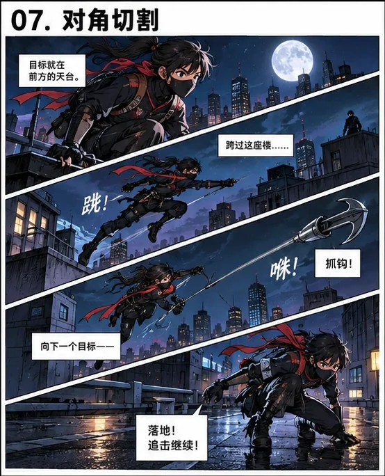
SB-007 · 对角切割
Diagonal Dynamic Split
漫画分镜、对角切割、斜线构图、速度感、冲突对峙
图型：SB-007 风格：… 主题：…
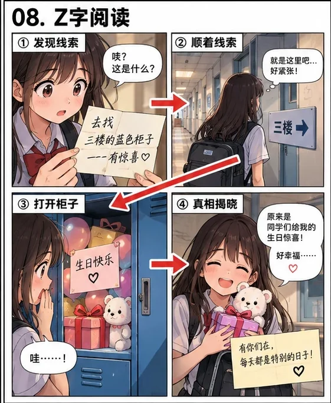
SB-008 · Z 字阅读
Z-Pattern Reading Flow
漫画分镜、Z字阅读、视线流动、经典阅读路径、清晰叙事
图型：SB-008 风格：… 主题：…
SB-009 · S 型阅读
S-Curve Narrative Flow
漫画分镜、S型阅读、柔和曲线、轻快浪漫、旅途叙事
图型：SB-009 风格：… 主题：…
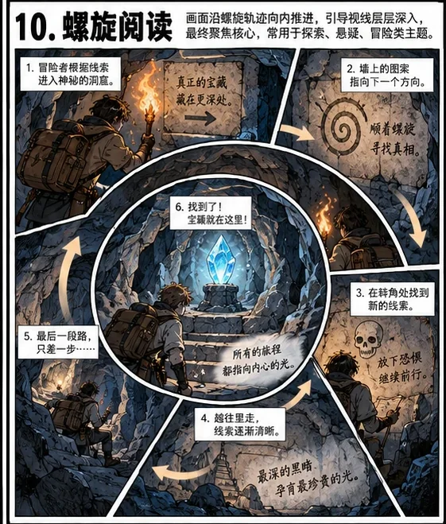
SB-010 · 螺旋阅读
Spiral Inward Flow
漫画分镜、螺旋阅读、环形收拢、层层逼近、核心聚焦
图型：SB-010 风格：… 主题：…
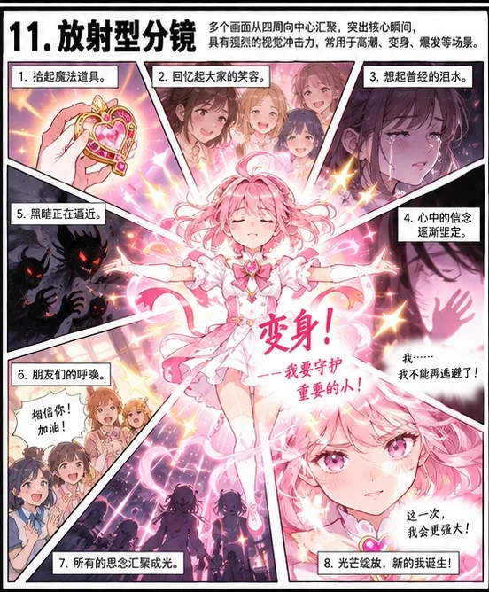
SB-011 · 放射型分镜
Radial Converging Panels
漫画分镜、放射型分镜、向心聚拢、爆发时刻、强焦点
图型：SB-011 风格：… 主题：…
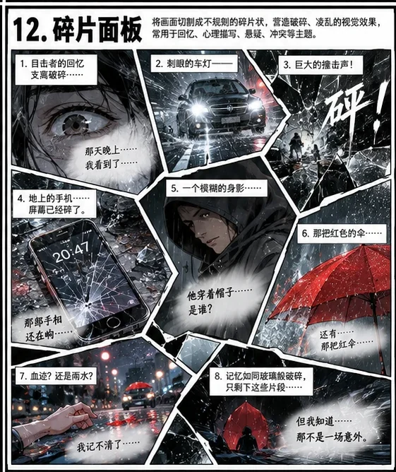
SB-012 · 碎片面板
Shattered Glass Panels
漫画分镜、碎片面板、玻璃破碎、混乱战斗、心理冲击
图型：SB-012 风格：… 主题：…
SB-013 · 破框构图
Border Break
漫画分镜、破框构图、越界动态、空间突破、力量感
图型：SB-013 风格：… 主题：…
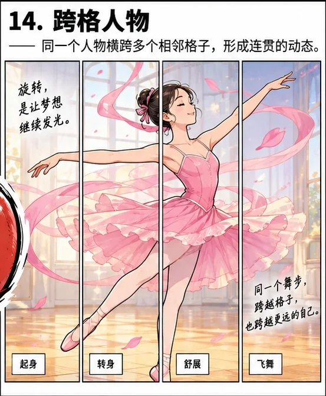
SB-014 · 跨格人物
Multi-Panel Spanning Character
漫画分镜、跨格人物、连续动作、跨格延伸、流动感
图型：SB-014 风格：… 主题：…
SB-015 · 跨格背景
Continuous Background Across Panels
漫画分镜、跨格背景、共享空间、全景延续、时空位移
图型：SB-015 风格：… 主题：…
SB-016 · 一镜到底
Single Continuous Take
漫画分镜、一镜到底、完整空间、多位置连续、纯镜头感
图型：SB-016 风格：… 主题：…
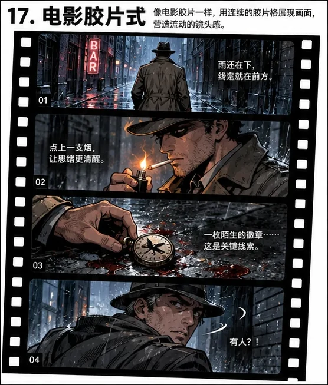
SB-017 · 电影胶片式
Cinematic Filmstrip
漫画分镜、电影胶片、连续画格、时间推进、电影质感
图型：SB-017 风格：… 主题：…
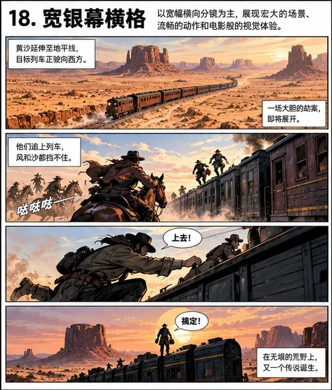
SB-018 · 宽银幕横格
Widescreen Horizontal Panels
漫画分镜、宽银幕横格、横向宽幅、宏大场景、动作场面
图型：SB-018 风格：… 主题：…
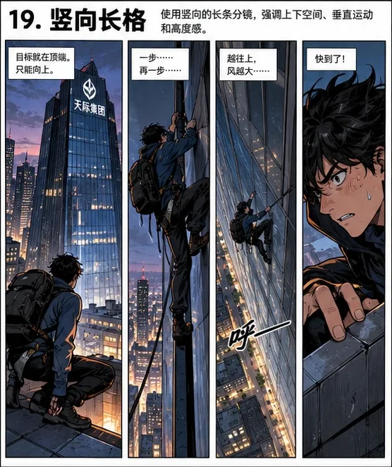
SB-019 · 竖向长格
Vertical Skyscraper Panels
漫画分镜、竖向长格、细长垂直、高空坠落、纵向运动
图型：SB-019 风格：… 主题：…
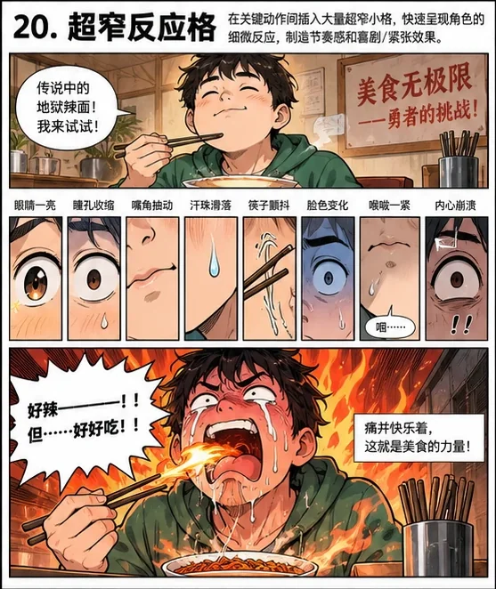
SB-020 · 超窄反应格
Ultra-Slim Reaction Insets
漫画分镜、超窄反应格、极速插入、局部特写、节奏切换
图型：SB-020 风格：… 主题：…
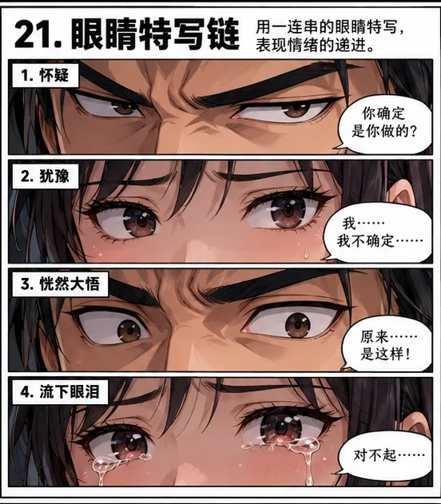
SB-021 · 眼睛特写链
Eye Close-Up Sequence
漫画分镜、眼神特写链、对峙神态、心理悬念、情绪升级
图型：SB-021 风格：… 主题：…
SB-022 · 手部动作链
Hand Action Sequence
漫画分镜、手部动作链、关键细节、局部操作、推进动作
图型：SB-022 风格：… 主题：…
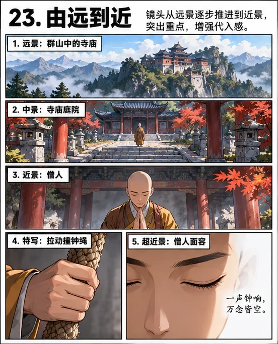
SB-023 · 由远到近
Long Shot to Extreme Close-Up
漫画分镜、由远到近、远景到特写、层层逼近、紧张感累积
图型：SB-023 风格：… 主题：…
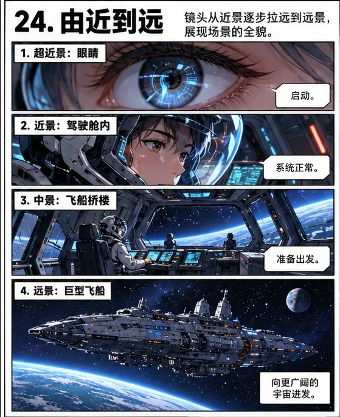
SB-024 · 由近到远
Extreme Close-Up to Wide Reveal
漫画分镜、由近到远、特写拉远、揭晓真相、环境反差
图型：SB-024 风格：… 主题：…
SB-025 · 正反打
Shot-Reverse-Shot
漫画分镜、正反打、交替对视、台词博弈、对话节奏
图型：SB-025 风格：… 主题：…
SB-026 · 三连特写
Triple Rapid Close-Ups
漫画分镜、三连特写、快速切换、三级递进、紧凑节拍
图型：SB-026 风格：… 主题：…
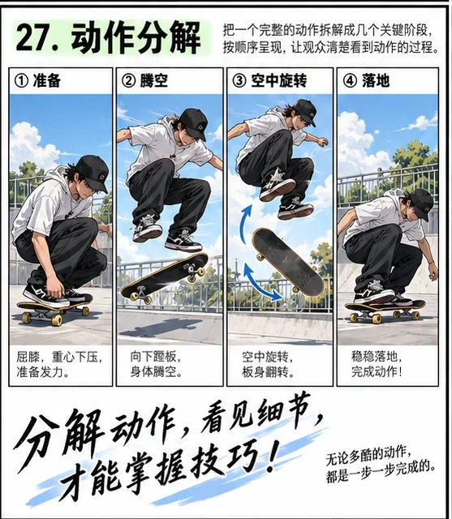
SB-027 · 动作分解
Action Breakdown
漫画分镜、动作分解、起势过程、击中反馈、慢动作解析
图型：SB-027 风格：… 主题：…
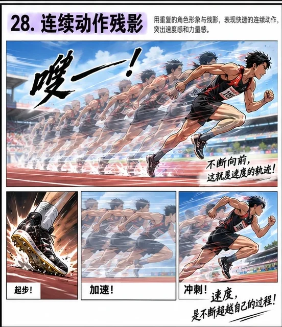
SB-028 · 连续动作残影
Motion Trail Strobe Sequence
漫画分镜、连续残影、多重影像、高速轨迹、动能表现
图型：SB-028 风格：… 主题：…
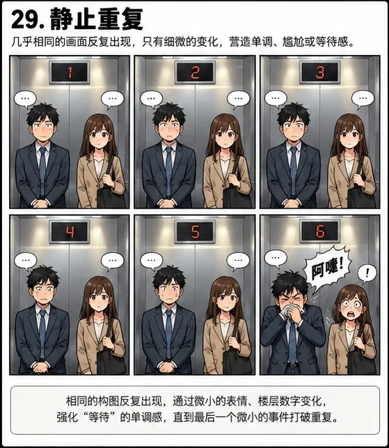
SB-029 · 静止重复
Static Panel Repetition
漫画分镜、静止重复、微小变化、冷面幽默、尴尬停滞
图型：SB-029 风格：… 主题：…
SB-030 · 节奏骤停
Sudden Pacing Halt
漫画分镜、节奏骤停、急停空白、反高潮、戏剧反差
图型：SB-030 风格：… 主题：…
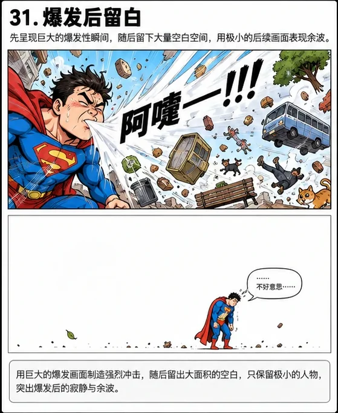
SB-031 · 爆发后留白
Post-Climax Negative Space
漫画分镜、爆发后留白、余韵留白、空旷微小、反差幽默
图型：SB-031 风格：… 主题：…
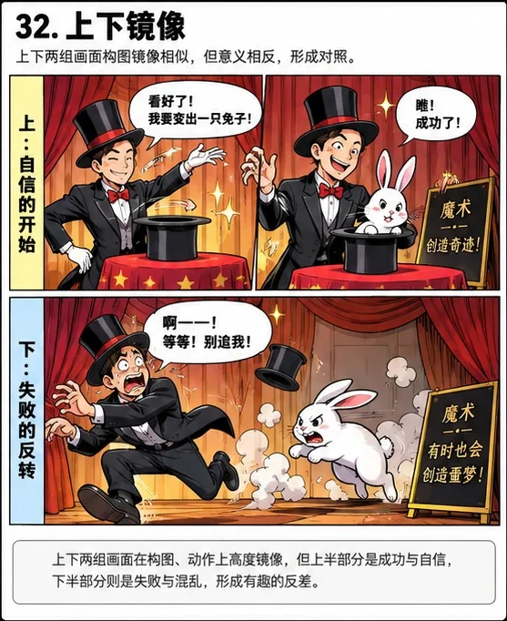
SB-032 · 上下镜像
Vertical Mirroring
漫画分镜、上下镜像、构图对照、内容反转、前后对比
图型：SB-032 风格：… 主题：…
SB-033 · 左右对峙
Split-Side Confrontation
漫画分镜、左右对峙、两极分化、视觉对抗、阵营博弈
图型：SB-033 风格：… 主题：…
SB-034 · 双线并行
Dual Parallel Storylines
漫画分镜、双线并行、双线推进、时空汇聚、多线叙事
图型：SB-034 风格：… 主题：…
SB-035 · 交叉剪辑
Cross-Cutting Parallel Action
漫画分镜、交叉剪辑、两地交替、悬念紧迫、误会冲突
图型：SB-035 风格：… 主题：…
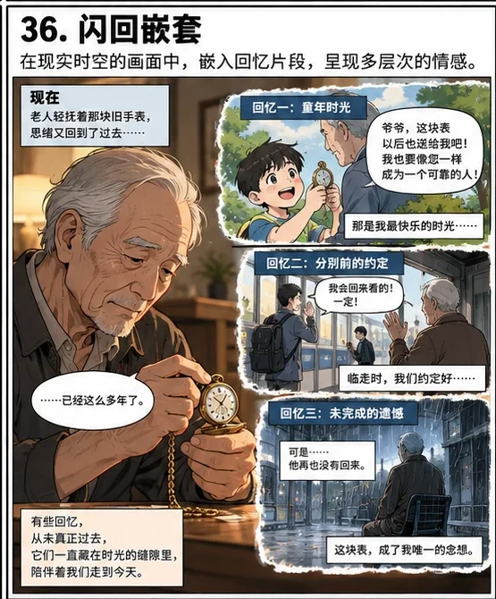
SB-036 · 闪回嵌套
Inset Memory Flashback
漫画分镜、闪回嵌套、记忆画格、画中画、回忆片段
图型：SB-036 风格：… 主题：…
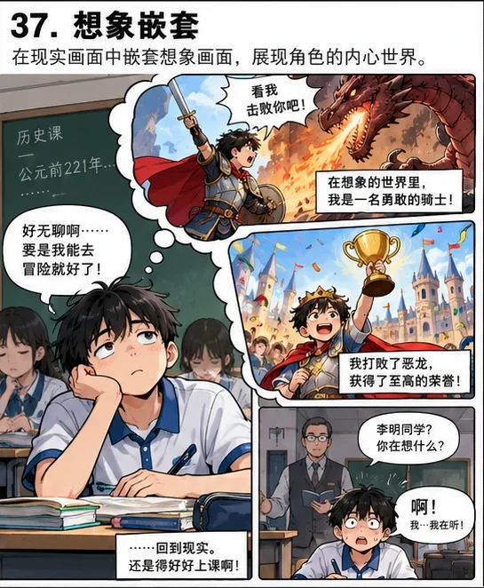
SB-037 · 想象嵌套
Inset Fantasy Bubble
漫画分镜、想象嵌套、脑洞格、现实幻想、内心喜剧
图型：SB-037 风格：… 主题：…
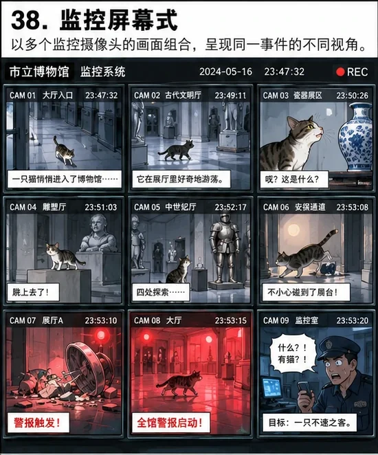
SB-038 · 监控屏幕式
Multi-CCTV Security Grid
漫画分镜、监控屏幕式、多视角监视、悬疑探案、客观观察
图型：SB-038 风格：… 主题：…
SB-039 · 手机聊天式
Smartphone Chat Overlay
漫画分镜、手机聊天式、社交气泡、虚拟现实、现代生活
图型：SB-039 风格：… 主题：…
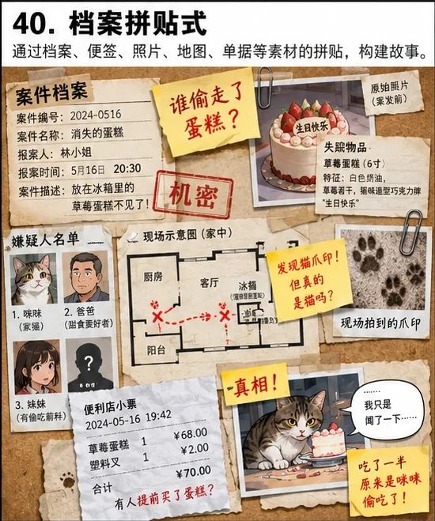
SB-040 · 档案拼贴式
Detective Case File Collage
漫画分镜、档案拼贴式、线索板、图文便签、破案调查
图型：SB-040 风格：… 主题：…
SB-041 · 杂志编辑式
Editorial Magazine Layout
漫画分镜、杂志编辑式、大标题排版、时尚版面、图文混排
图型：SB-041 风格：… 主题：…
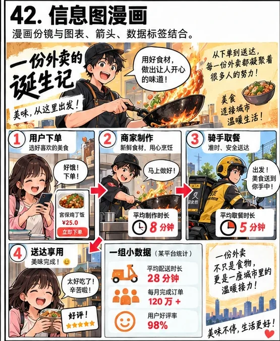
SB-042 · 信息图漫画
Infographic Comic Hybrid
漫画分镜、信息图漫画、图表箭头、科普漫画、数据可视化
图型：SB-042 风格：… 主题：…
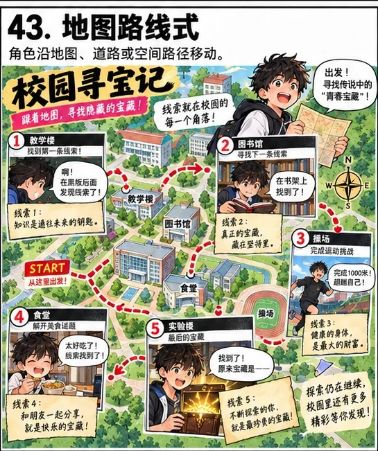
SB-043 · 地图路线式
Map & Trail Journey
漫画分镜、地图路线式、路径引导、空间位移、旅行冒险
图型：SB-043 风格：… 主题：…
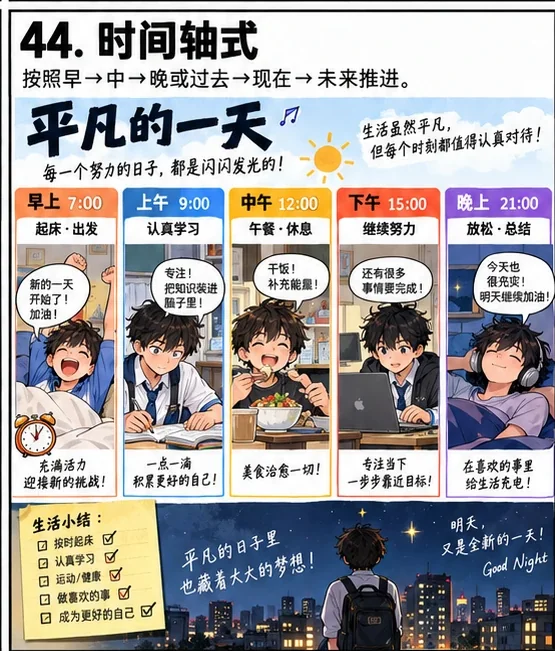
SB-044 · 时间轴式
Chronological Timeline Progression
漫画分镜、时间轴式、早中晚顺序、时光流转、阶段演进
图型：SB-044 风格：… 主题：…
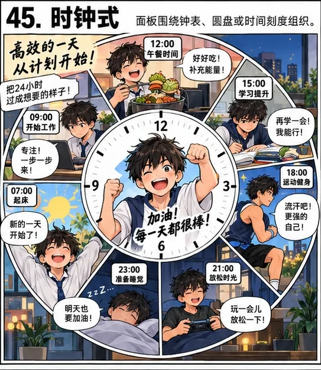
SB-045 · 时钟式
Clock Face Radial Layout
漫画分镜、时钟式、表盘刻度、倒计时、日周循环
图型：SB-045 风格：… 主题：…
SB-046 · 中心物件式
Central Anchor Prop
漫画分镜、中心物件式、核心道具、环绕事件、物象聚焦
图型：SB-046 风格：… 主题：…
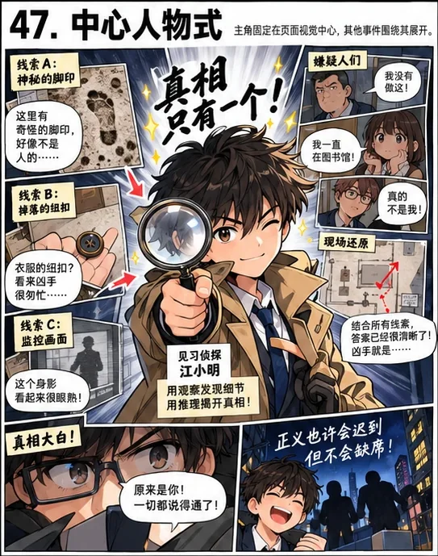
SB-047 · 中心人物式
Central Anchor Protagonist
漫画分镜、中心人物式、主角居中、环视多角、众星捧月
图型：SB-047 风格：… 主题：…
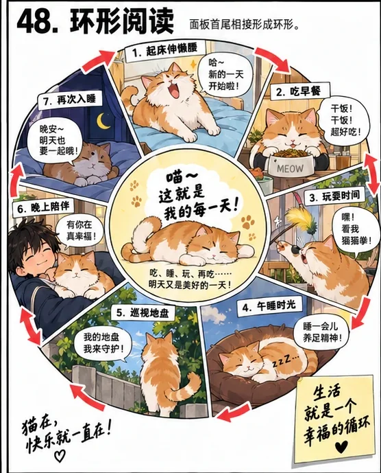
SB-048 · 环形阅读
Circular Loop Narrative
漫画分镜、环形阅读、闭环循环、首尾相接、时间莫比乌斯
图型：SB-048 风格：… 主题：…
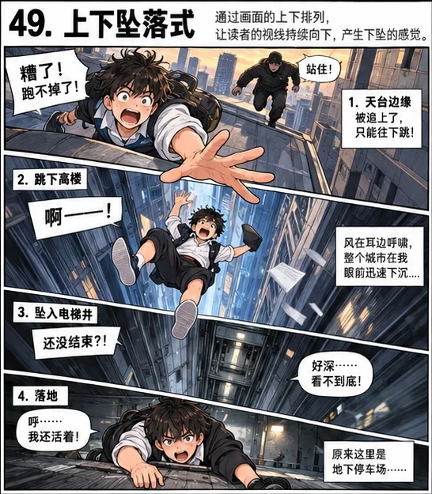
SB-049 · 上下坠落式
Downward Plunge Flow
漫画分镜、上下坠落式、纵深俯冲、失重加速、垂直贯穿
图型：SB-049 风格：… 主题：…
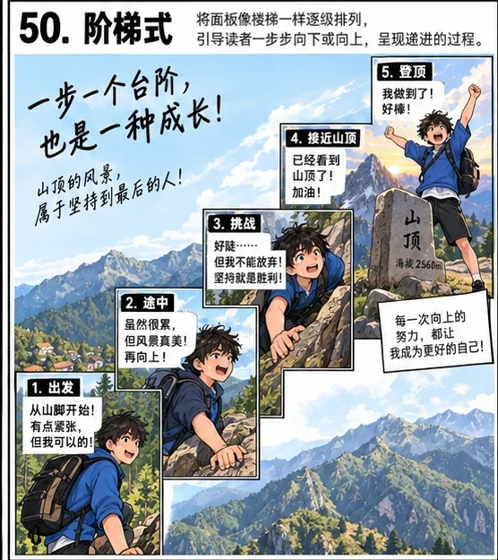
SB-050 · 阶梯式
Stepped Staircase Progression
漫画分镜、阶梯式、台阶排版、层级爬升、逐级强化
图型：SB-050 风格：… 主题：…
SB-051 · 波浪式
Undulating Wave Flow
漫画分镜、波浪式、曲线律动、梦境起伏、音乐流动
图型：SB-051 风格：… 主题：…
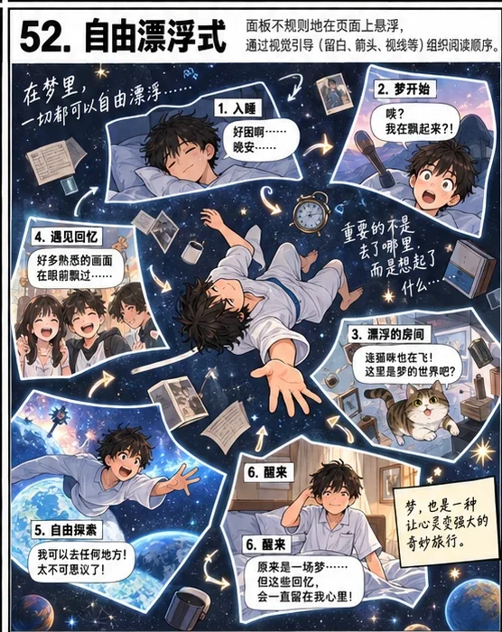
SB-052 · 自由漂浮式
Free-Floating Unframed Panels
漫画分镜、自由漂浮式、散点排布、留白飘逸、视线导引
图型：SB-052 风格：… 主题：…
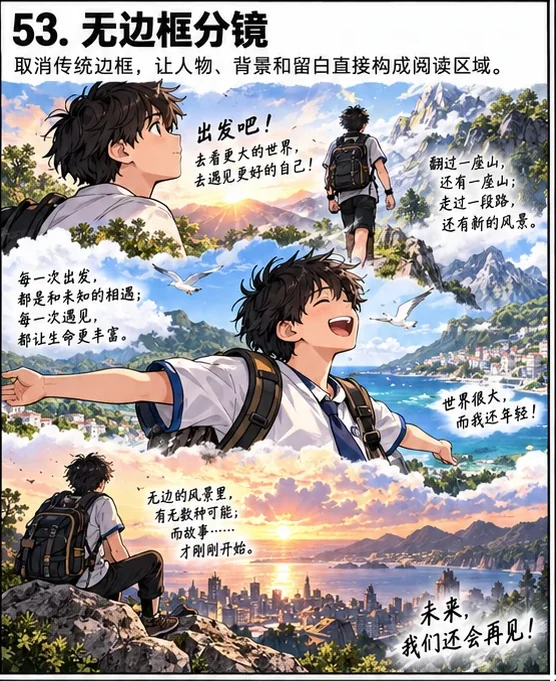
SB-053 · 无边框分镜
Frameless Organic Narrative
漫画分镜、无边框分镜、自然破框、呼吸留白、有机排版
图型：SB-053 风格：… 主题：…
SB-054 · 白场分镜
Generous Negative Space
漫画分镜、白场分镜、大面积留白、极简留白、诗意克制
图型：SB-054 风格：… 主题：…
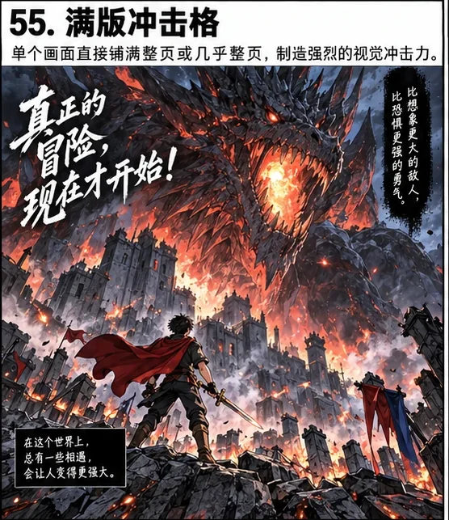
SB-055 · 满版冲击格
Full-Bleed Splash Page
漫画分镜、满版冲击格、全版画格、视觉爆点、高潮定格
图型：SB-055 风格：… 主题：…
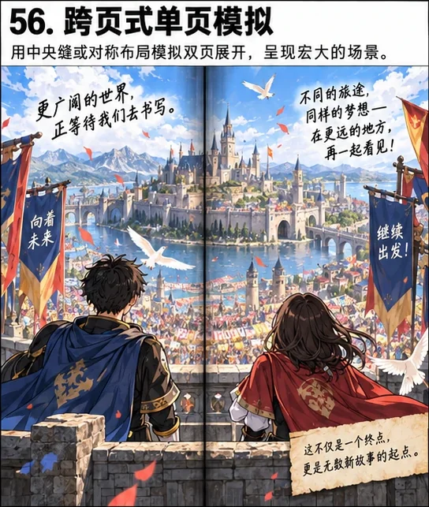
SB-056 · 跨页式单页模拟
Simulated Double-Page Spread
漫画分镜、跨页式单页、中央对称、双页模拟、史诗宽幅
图型：SB-056 风格：… 主题：…
SB-057 · 海报式漫画
Poster-Style Narrative
漫画分镜、海报式漫画、主视觉封面、画中嵌入、故事附着
图型：SB-057 风格：… 主题：…
SB-058 · 封面式叙事页
Magazine Cover Narrative
漫画分镜、封面式叙事、杂志头条、刊头标题、完整情节
图型：SB-058 风格：… 主题：…
SB-059 · 舞台式分镜
Fixed Proscenium Stage
漫画分镜、舞台式分镜、固定机位、角色进出、戏剧空间
图型：SB-059 风格：… 主题：…
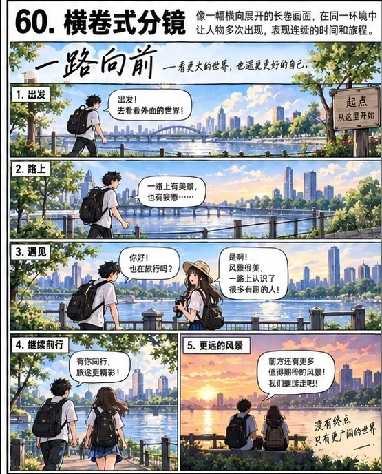
SB-060 · 横卷式分镜
Horizontal Continuous Scroll
漫画分镜、横卷式分镜、长卷漫步、连续画卷、步移景异
图型：SB-060 风格：… 主题：…
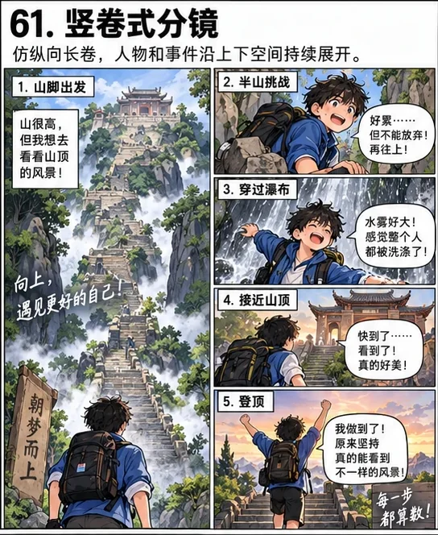
SB-061 · 竖卷式分镜
Vertical Hanging Scroll
漫画分镜、竖卷式分镜、立轴画幅、垂直流转、古风长卷
图型：SB-061 风格：… 主题：…
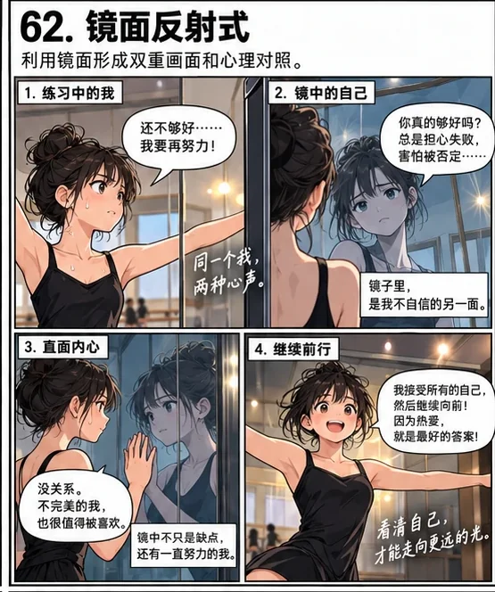
SB-062 · 镜面反射式
Mirror Reflection Dualism
漫画分镜、镜面反射式、倒影双重视角、双重人格、心理对照
图型：SB-062 风格：… 主题：…
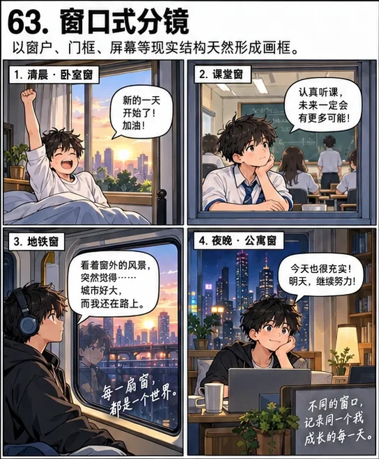
SB-063 · 窗口式分镜
Architectural Window Framing
漫画分镜、窗口式分镜、现实画框、门窗借景、空间切割
图型：SB-063 风格：… 主题：…
SB-064 · 物件遮挡式
Foreground Silhouette Framing
漫画分镜、物件遮挡式、前景遮挡、自然隔断、纵深分层
图型：SB-064 风格：… 主题：…
SB-065 · 文字主导式
Typographic Scaffold Layout
漫画分镜、文字主导式、字形骨架、拟声构架、图文共构
图型：SB-065 风格：… 主题：…
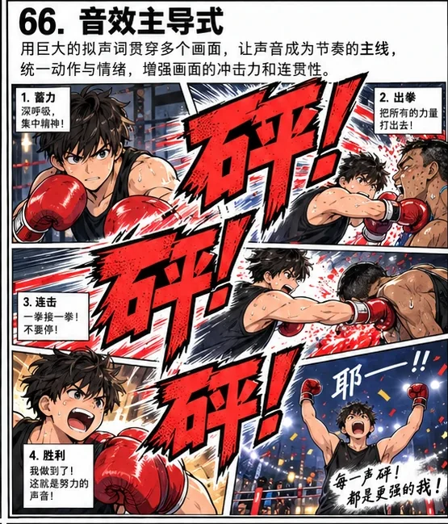
SB-066 · 音效主导式
Onomatopoeia Trail
漫画分镜、音效主导式、巨大声效、动势贯通、冲击力
图型：SB-066 风格：… 主题：…
SB-067 · 色块主导式
Color Block Panel Partitions
漫画分镜、色块主导式、纯色分隔、情绪色彩、平面设计感
图型：SB-067 风格：… 主题：…
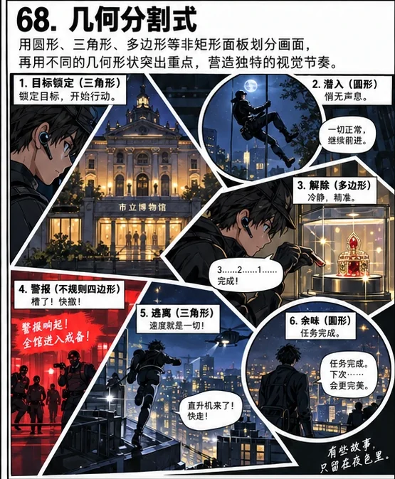
SB-068 · 几何分割式
Non-Rectangular Geometric Mosaic
漫画分镜、几何分割式、非矩形面板、圆形三角、视觉律动
图型：SB-068 风格：… 主题：…
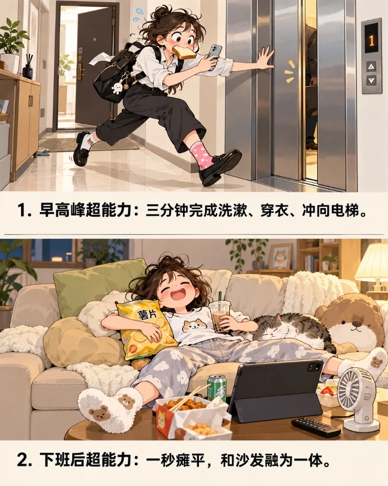
SB-069 · 上下两格生活漫画分镜
Two-Panel Vertical Lifestyle Comic Storyboard
竖版上下两格、等大纵向排列、上图下文结构、80%场景插画、20%横向文字栏、阿拉伯数字编号、细横线分隔、统一边距与比例、独立生活场景、规整简洁无装饰
图型：SB-069 风格：… 主题：…
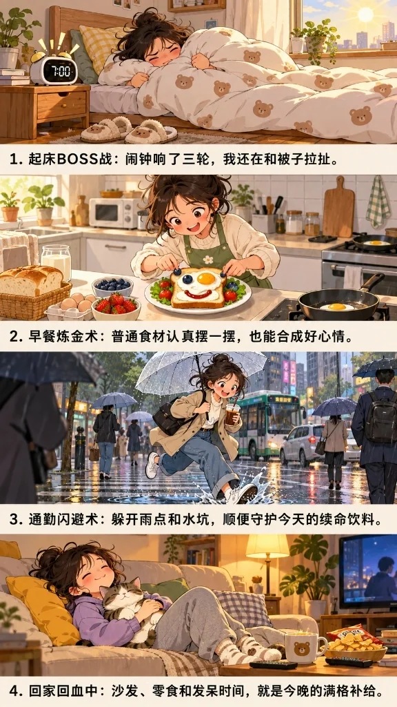
SB-070 · 上下四格生活漫画分镜
Four-Panel Vertical Lifestyle Comic Storyboard
竖版上下四格、等大纵向排列、上图下文结构、80%场景插画、20%横向文字栏、阿拉伯数字编号、细横线分隔、统一边距与比例、独立生活场景、规整简洁无装饰
图型：SB-070 风格：… 主题：…
SB-071 · 上下三格生活漫画分镜
Three-Panel Vertical Lifestyle Comic Storyboard
竖版上下三格、等大纵向排列、上图下文结构、80%场景插画、20%横向文字栏、阿拉伯数字编号、细横线分隔、统一边距与比例、独立生活场景、规整简洁无装饰
图型：SB-071 风格：… 主题：…
EC-001 · 单品主图
Single Product Hero Image
单品主图、商品主图、主体清晰、第一眼看懂商品
图型：EC-001 风格：… 主题：…
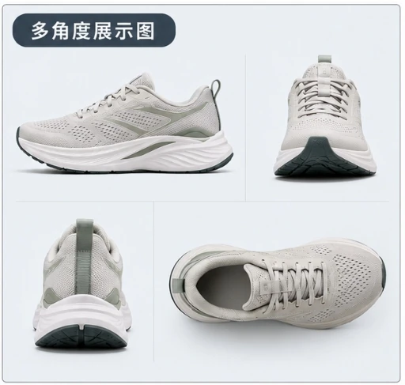
EC-002 · 多角度展示图
Multi-Angle Display Image
多角度展示图、不同视角、整体结构、形态展示
图型：EC-002 风格：… 主题：…
EC-003 · 细节特写图
Detail Closeup Image
细节特写图、局部细节、做工、材质质感
图型：EC-003 风格：… 主题：…
EC-004 · 包装 / 套装 / 内容物展示图
Packaging / Set / Contents Display Image
包装展示图、套装展示、内容物展示、配件清单、陈列
图型：EC-004 风格：… 主题：…
EC-005 · 卖点标注图
Feature Callout Image
卖点标注图、核心卖点、购买理由、视觉层级
图型：EC-005 风格：… 主题：…
EC-006 · 功能演示图
Function Demonstration Image
功能演示图、核心功能、动作设计、功能可视化
图型：EC-006 风格：… 主题：…
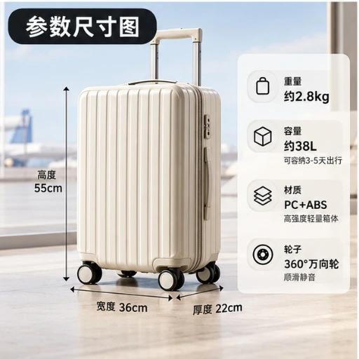
EC-007 · 参数尺寸图
Specification & Dimension Image
参数尺寸图、规格尺寸、测量关系、参数说明
图型：EC-007 风格：… 主题：…
EC-008 · 材质 / 结构解析图
Material / Structure Exploded Image
材质解析图、结构解析图、剖面、分层、爆炸展开
图型：EC-008 风格：… 主题：…
EC-009 · 生活方式场景图
Lifestyle Scenario Image
生活方式场景图、生活情境、场景氛围、品牌调性
图型：EC-009 风格：… 主题：…
EC-010 · 人物使用图
In-Use Demonstration Image
人物使用图、真实使用、使用者、交互表现
图型：EC-010 风格：… 主题：…
EC-011 · 多场景适用图
Multi-Scenario Application Image
多场景适用图、典型场景、适用性、场景对比
图型：EC-011 风格：… 主题：…
EC-012 · 使用步骤 / 教程图
Usage Steps / Tutorial Image
使用步骤图、教程图、使用指南、流程组织
图型：EC-012 风格：… 主题：…
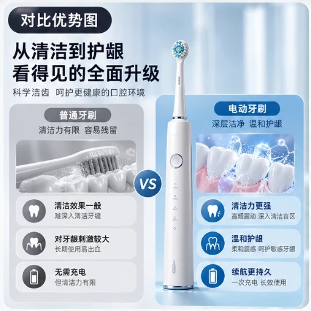
EC-013 · 对比优势图
Comparative Advantage Image
对比优势图、关键差异、比较维度、选购对比
图型：EC-013 风格：… 主题：…
EC-014 · 型号 / SKU 差异图
Model / SKU Comparison Image
型号差异图、SKU差异图、多版本陈列、颜色尺寸区分
图型：EC-014 风格：… 主题：…
EC-015 · 适配 / 选择指南图
Fit / Selection Guide Image
适配指南图、选择指南、版本推荐、需求匹配
图型：EC-015 风格：… 主题：…
EC-016 · FAQ / 注意事项图
FAQ / Precautions Image
FAQ图、注意事项图、常见问答、购买须知
图型：EC-016 风格：… 主题：…
EC-017 · 品质 / 工艺说明图
Quality & Craftsmanship Explanatory Image
品质说明图、工艺说明图、制造过程、做工细节、品质感
图型：EC-017 风格：… 主题：…
EC-018 · 认证 / 数据证明图
Certification & Data Proof Image
认证图、数据证明图、检测结果、权威认证、数据可视化
图型：EC-018 风格：… 主题：…
EC-019 · 评价 / 口碑图
Review & Word-of-Mouth Image
评价图、口碑图、用户反馈、好评如潮、真实口碑
图型：EC-019 风格：… 主题：…
EC-020 · 品牌 / 来源故事图
Brand & Origin Story Image
品牌故事图、来源故事、产区溯源、设计理念、品牌背景
图型：EC-020 风格：… 主题：…
EC-021 · 新品上市图
New Arrival Launch Image
新品上市图、全新升级、首发上市、新品亮点、视觉冲击
图型：EC-021 风格：… 主题：…
EC-022 · 促销活动图
Promotion & Sales Event Image
促销活动图、限时抢购、满减折扣、爆款直降、大促海报
图型：EC-022 风格：… 主题：…
EC-023 · 内容种草 / UGC 图
Content Seeding & UGC Image
内容种草图、UGC分享、真实分享、随拍感、好物推荐
图型：EC-023 风格：… 主题：…
EC-024 · 广告主视觉 / Hero / KV
Key Visual & Hero Art (KV)
广告主视觉、Hero图、主KV、核心视觉概念、传播大图
图型：EC-024 风格：… 主题：…
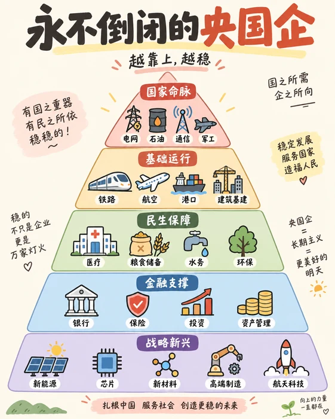
IG-001 · 标题金字塔图标信息图
Pyramid Hierarchy Icon Infographic
带标题、金字塔示意图、分层结构、标签图标、多层信息图
图型：IG-001 风格：… 主题：…
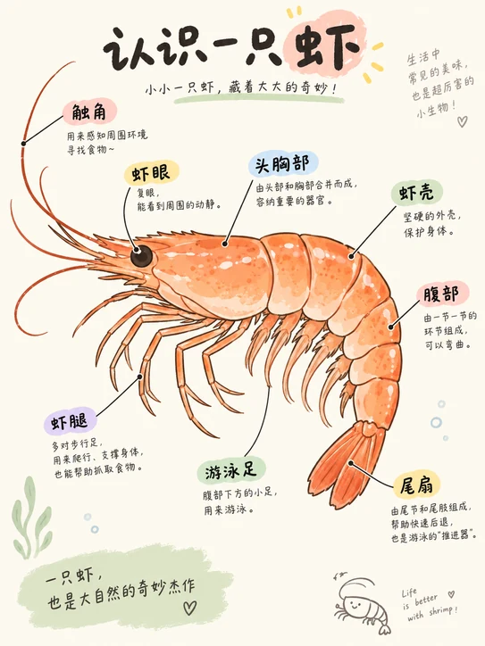
IG-002 · 中心主图标注信息图
Central Hero Callout Infographic
中心主图、带线标注、环绕注释、部位说明、标注图
图型：IG-002 风格：… 主题：…

IG-003 · 多行左文右图信息图
Multi-Row Left-Text Right-Image Infographic
多行图文、左文右图、主标题、行程路线、图鉴速览、分类清单、多行对比、信息图
图型：IG-003 风格：… 主题：…
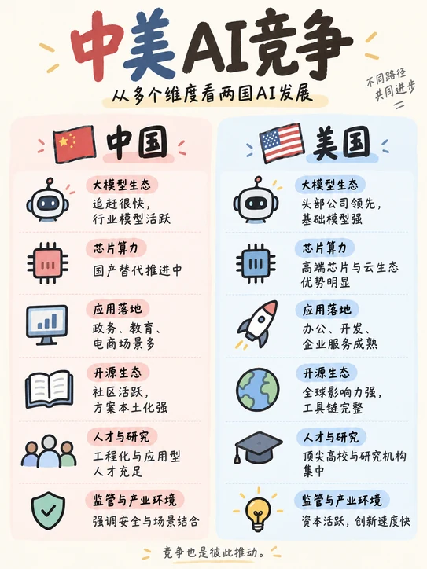
IG-004 · 双列多行对比信息图
Two-Column Multi-Row Comparison
双列对比、主标题、多行内容、左右分栏、逐项比较、信息图
图型：IG-004 风格：… 主题：…
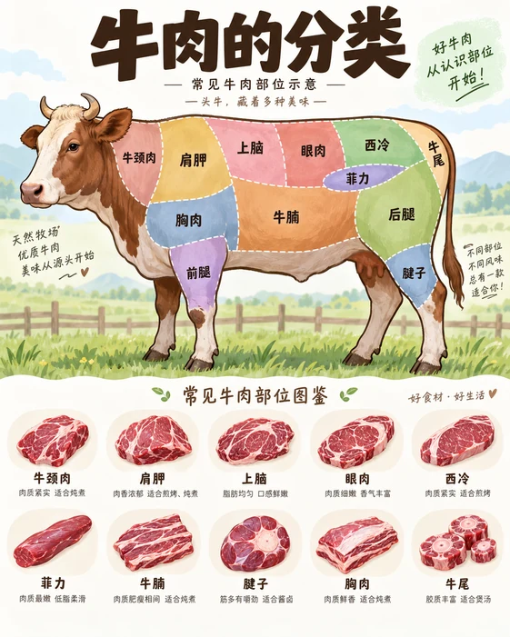
IG-005 · 大主视觉下方图鉴信息图
Hero Visual Catalog Infographic
超大标题、大型主视觉、嵌入式标签、下方图鉴单元、分类浏览、强层级结构
图型：IG-005 风格：… 主题：…
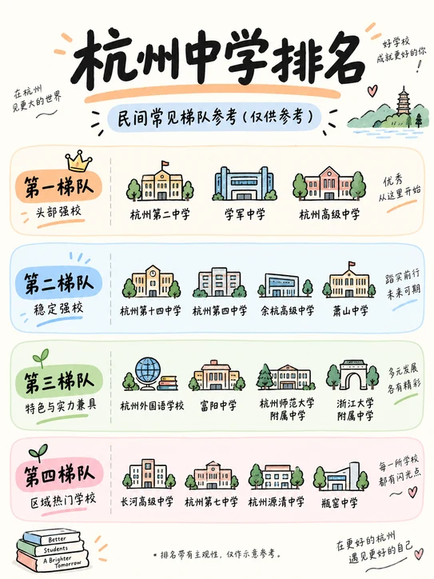
IG-006 · 多层标题图标对比信息图
Multi-Tier Headline Icon Comparison
多层对比、主标题、左侧层级标题、右侧带字图标、整齐排列、信息图
图型：IG-006 风格：… 主题：…
IG-007 · 粗体标题标签小图卡
Bold Headline Tag Cards
粗体标题、标签小图、底部短句、纯色背景、留白
图型：IG-007 风格：… 主题：…
IG-008 · 多路径流程步骤图
Multi-Path Process Step Flow
流程步骤、有标题、横向流程、纵向流程、S形路径、一步一图一句
图型：IG-008 风格：… 主题：…
IG-009 · 时间轴节点信息图
Timeline Milestone Infographic
时间轴、主轴节点、横向时间轴、纵向时间轴、节点小图、时间短句、大面积留白
图型：IG-009 风格：… 主题：…
IG-010 · 阶段等级进阶信息图
Stage Progression Infographic
阶段进阶、等级变化、阶梯、上升箭头、层级结构、大面积留白
图型：IG-010 风格：… 主题：…
IG-011 · 前后变化对比信息图
Before & After Comparison Infographic
Before After、前后对比、变化重点、左右对比、上下对比、箭头、少量说明
图型：IG-011 风格：… 主题：…
IG-012 · 分层结构型信息图
Layered Hierarchy Infographic
分层结构、上中下、内中外、表层深层、层级关系、层层递进
图型：IG-012 风格：… 主题：…
IG-013 · 漏斗转化型信息图
Conversion Funnel Infographic
漏斗型、上宽下窄、筛选、转化、淘汰、聚焦、层级递进
图型：IG-013 风格：… 主题：…
IG-014 · 四象限矩阵信息图
Four-Quadrant Matrix Infographic
矩阵型、2×2、两条轴、四象限、横纵坐标、象限对比
图型：IG-014 风格：… 主题：…
IG-015 · 坐标散点型信息图
Coordinate Scatter Plot Infographic
坐标散点、坐标空间、横轴、纵轴、对象分布、位置关系
图型：IG-015 风格：… 主题：…
IG-016 · 分类树状型信息图
Categorical Tree Hierarchy Infographic
分类树、树状结构、大类分小类、层级分支、父子关系、末端节点
图型：IG-016 风格：… 主题：…
IG-017 · 思维导图型信息图
Mind Map Radial Infographic
思维导图、脑图、中心节点、多条分支、层级关系、辐射展开
图型：IG-017 风格：… 主题：…
IG-018 · 关系网络型信息图
Relationship Network Infographic
关系网络、多节点、连线关系、复杂网络、节点群、网状结构
图型：IG-018 风格：… 主题：…
IG-019 · 循环闭环型信息图
Closed-Loop Cycle Infographic
循环闭环、环形路径、连续箭头、反馈迭代、闭环流程、持续循环
图型：IG-019 风格：… 主题：…
IG-020 · 路径地图型信息图
Narrative Route Map Infographic
路径地图、探索路线、编号节点、阶段路标、蜿蜒路线、游戏地图式
图型：IG-020 风格：… 主题：…
IG-021 · 真实地图标注型信息图
Geographic Map with Annotations
真实地图、地图轮廓、地点标注、区域关系、图例简洁、空间分布
图型：IG-021 风格：… 主题：…
IG-022 · 数字大字型信息图
Big Number Stat Highlight Infographic
数字大字、超大数字、视觉主体、数据冲击、极短说明、极简数字
图型：IG-022 风格：… 主题：…
IG-023 · 排行榜型信息图
Leaderboard Ranking Infographic
排行榜、名次顺序、前五名、纵向排行、核心数据、领跑视觉
图型：IG-023 风格：… 主题：…
IG-024 · 比例构成型信息图
Part-to-Whole Composition Infographic
比例构成、圆环图、饼图、百分比、份额占比、整体部分
图型：IG-024 风格：… 主题：…
IG-025 · 尺度比较型信息图
Scale Comparison Infographic
尺度比较、从小到大、相对尺寸、真实尺度、视觉比较、递进关系
图型：IG-025 风格：… 主题：…
IG-026 · 拆解爆炸图型信息图
Exploded Assembly View Infographic
拆解爆炸图、组件分离、零件结构、引导线说明、组成关系、剖析结构
图型：IG-026 风格：… 主题：…
IG-027 · 剖面截面型信息图
Cutaway Sectional View Infographic
剖面截面、切开展示、内部空间、楼层结构、功能分区、透视切口
图型：IG-027 风格：… 主题：…
IG-028 · 连续场景信息图
Continuous Scene Panoramic Infographic
连续场景、连贯空间、时间场景、信息节点、场景串联、沉浸叙事
图型：IG-028 风格：… 主题：…
IG-029 · 人物群像标签型信息图
Character Ensemble Label Infographic
人物群像、角色标签、自由站位、形态差异、特征标注、角色概括
图型：IG-029 风格：… 主题：…
IG-030 · 一大多小知识图谱型信息图
Core Hero Knowledge Map Infographic
核心主图、多节点、小视觉、知识图谱、短文字、弱中心关系
图型：IG-030 风格：… 主题：…
IG-031 · 百科全书式信息卡
Encyclopedic Specimen Information Card
百科全书、标本展示、多模块信息、细线网格、博物馆导览、图文混排、理性设计
图型：IG-031 风格：… 主题：…
IG-032 · 手绘编辑式知识信息图
Hand-Drawn Editorial Knowledge Infographic
手绘编辑式、大标题、核心主视觉、编号模块、思维泡泡、手写注释、清单总结、轻漫画叙事、知识信息图
图型：IG-032 风格：… 主题：…
IG-033 · 讲义式高密分析信息图
High-Density Handout Analytical Infographic
讲义式排版、高信息密度、总览分解总结、编号分析模块、表格容器、步骤流程区、思维导图决策树、重点结论区、易错提醒、知识点结构化
图型：IG-033 风格：… 主题：…

IG-034 · 编辑式等距轴测全景地图信息图
Editorial Isometric Illustrated Map Infographic
编辑式轴测地图、等距轴测全景、微缩世界地图、纵向长幅构图、不规则节点错落、大留白呼吸感、空间叙事隐藏流程、极简线稿插画、趣味微缩互动
图型：IG-034 风格：… 主题：…
IG-035 · 2.5D等距轴测微缩场景
2.5D Isometric Miniature Scene
2.5D、等距轴测、微缩场景
图型：IG-035 风格：… 主题：…
IG-036 · 迷宫大侦探高密度轴测全景信息图
Maze Detective High-Density Isometric Exploration Infographic
迷宫大侦探、轴测俯瞰、高密度构图、多中心分区叙事、立体空间布局、微细节嵌套、连续动线、可探索全景、45度轴测
图型：IG-036 风格：… 主题：…
IG-037 · 高精细手绘等距轴测地图信息图
High-Detail Isometric Travel Guide Map Infographic
高精细手绘等距轴测地图信息图、等距轴测地图、旅游导览地图、鸟瞰微缩城市、地图信息图、线路图、景点打卡
图型：IG-037 风格：… 主题：…
IG-038 · 万能信息图
Universal Infographic
万能信息图、万能信息图、信息图、通用信息图、万能版式、结构化图解
图型：IG-038 风格：… 主题：…

IP-001 · IP定位卡
IP Positioning Card
IP定位卡、品牌封面感、纯色背景、大字排版、非人吉祥物、视觉隐喻、受众画像、调性标签
图型：IP-001 风格：… 主题：…
IP-002 · 角色形象三视图基准图
Character Model Sheet & Turnaround
三视图、角色三视图、形象基准图、正视图侧视图背视图、头像特写
图型：IP-002 风格：… 主题：…
IP-003 · 16宫格角色微信表情包
16-Grid Character WeChat Sticker Sheet
16宫格、微信表情包、表情包、角色表情、4x4宫格、日常互动、贴纸设计
图型：IP-003 风格：… 主题：…
IP-004 · IP服装与道具卡
IP Outfit & Props Card
服装与道具卡、常服搭配、随身道具、IP设计手册、角色服装、道具展示、Character Bible
图型：IP-004 风格：… 主题：…
IP-005 · IP内容传播示范卡
IP Content Communication Showcase Card
内容传播卡、社交平台单图宣传、封面传播、6宫格矩阵、社媒封面、IP传播手册、Character Bible
图型：IP-005 风格：… 主题：…
IP-006 · IP角色家族卡
IP Character Family Lineup Card
角色家族卡、家族卡、系列化延展、群像展示、全家福、日常小剧场、IP设计手册、Character Bible
图型：IP-006 风格：… 主题：…
IP-007 · IP商业应用卡
IP Commercial Mockup Card
商业应用卡、周边衍生、产品落地、Mockup、实体周边、周边开发、IP设计手册、Character Bible
图型：IP-007 风格：… 主题：…
IP-008 · IP角色关系卡
IP Character Relationship Card
角色关系卡、相处机制、主角与搭档、互动模式、微缩剧场、IP设计手册、Character Bible
图型：IP-008 风格：… 主题：…
IP-009 · IP角色一日生活相册
IP Character A Day in the Life Photo Album
一日生活相册、iPhone相册、生活记录、18宫格照片流、手机截屏、角色日常、时间线记录、IP设计手册
图型：IP-009 风格：… 主题：…
IP-010 · IP角色社交圈动态卡
IP Character Social Feed Moments Card
朋友圈动态卡、微信朋友圈、社交圈动态、朋友视角、手机截屏、日常抓拍、第三方侧写、IP设计手册
图型：IP-010 风格：… 主题：…
IP-011 · IP角色微信群聊界面卡
IP Character WeChat Group Chat Interface Card
微信群聊、群聊截屏、聊天界面、好友互动、角色日常、表情包互动、社交对话、IP设计手册
图型：IP-011 风格：… 主题：…
IP-012 · IP角色小红书主页卡
IP Character Xiaohongshu Profile Interface Card
小红书主页、个人主页、社媒账号、应用截屏、爆款笔记、内容流、粉丝运营、IP设计手册
图型：IP-012 风格：… 主题：…
IP-013 · IP招牌体态与动态力线卡
IP Signature Poses & Action Lines Card
招牌体态、动态力线、体态展示、动作力线、角色动作、视觉延展、IP设计手册、Character Bible
图型：IP-013 风格：… 主题：…
SC-001 · 上文下图社媒卡
Text-Above-Image Social Card
上文下图、上方文字、下方主图、上下结构、简洁构图
图型：SC-001 风格：… 主题：…
SC-002 · 文案主导底部辅助图卡
Text-Dominant Bottom-Graphic Card
文字主视觉、底部辅助图、图文留白、纯色背景、极简
图型：SC-002 风格：… 主题：…
SC-003 · 上下双格图文卡
Two-Panel Stacked Card
上下两宫格、上文下图、带框、纯色背景、留白
图型：SC-003 风格：… 主题：…
SC-004 · 上下双格图文分区卡
Two-Panel Split Section Card
上下两宫格、图文分区、带框、纯色背景、留白
图型：SC-004 风格：… 主题：…
SC-005 · 气泡文字思考IP卡
Thought-Bubble Character Card
气泡文字、思考IP、左下/右下角色、无独立标题、大面积留白、简洁构图
图型：SC-005 风格：… 主题：…
SC-006 · 三层标题辅助图卡
Three-Tier Headline Graphic Card
三层结构、上层主标题、中层辅助图、下层副标题、纯色背景、大面积留白
图型：SC-006 风格：… 主题：…
SC-007 · 引号关键词文字卡
Quote Keyword Typography Card
文字型、左上双引号、中心主题文案、关键词重点化、右下下划线、适配emoji
图型：SC-007 风格：… 主题：…
SC-008 · 图上文下留白卡
Image-Above-Text Whitespace Card
图上文下、图文融合、无明显界线、角色概括、纯色背景、大面积留白
图型：SC-008 风格：… 主题：…
SC-009 · 居中文字右下辅助图卡
Centered Text Corner Graphic Card
文字主体、居中排版、右下辅助图、简洁构图、文字型社媒卡
图型：SC-009 风格：… 主题：…
SC-010 · 上下双格标题列表卡
Two-Panel List & Graphic Card
上下双格、带框分区、一行标题、简短列表、简单配图、图文融合
图型：SC-010 风格：… 主题：…
SC-011 · 中心主图多场景信息卡
Central Hero Multi-Scene Card
主标题、中心主图、同主体信息图、多场景配图、简单标注、大面积留白
图型：SC-011 风格：… 主题：…
SC-012 · 中心标题上下图标卡
Center Title Top-Bottom Icon Card
垂直居中标题、上方两行图标、下方两行图标、中心对称、图标环绕、简洁构图
图型：SC-012 风格：… 主题：…

SC-014 · 留白驱动主视觉信息卡
Whitespace-Driven Hero Information Card
顶部短标题、大型主视觉、留白信息单元、不规则分布、主视觉优先、底部总结
图型：SC-014 风格：… 主题：…
SC-015 · 上下双区递进短句卡
Two-Tier Progressive Short-Phrase Card
上下双区、核心短句、单一主视觉、补充说明、对照递进、手机端阅读
图型：SC-015 风格：… 主题：…
SC-016 · 极简大字小图点缀卡
Minimalist Big-Type Accent Card
大面积留白、大字号短文案、偏左文字、小型视觉点缀、四角弱信息、极简社媒卡
图型：SC-016 风格：… 主题：…
SC-017 · 自由标注留白信息卡
Freely Annotated Whitespace Card
主标题、自由标签、元素注解、文字参与构图、大面积留白、角色概括
图型：SC-017 风格：… 主题：…
SC-018 · 中心主视觉环绕信息卡
Center Hero Surrounding Info Card
两级短标题、中心主视觉、环绕小插图、自由分布、极短标签、大面积留白
图型：SC-018 风格：… 主题：…
SC-019 · 中央人物细线标注卡
Central Character Leader-Line Card
顶部短标题、完整人物、左右标签、细线指向、三级结构、手机端阅读
图型：SC-019 风格：… 主题：…
SC-020 · 一大一组非对称信息卡
Asymmetric Hero & Group Cluster Card
顶部短标题、大型主视觉、集中信息簇、非对称布局、4-6个小单元、底部总结
图型：SC-020 风格：… 主题：…
SC-021 · 自适应双拼照片转译社媒卡
Adaptive Split Photo-to-Art Social Card
自适应双拼、比例驱动切分、画幅自适应、照片转译、视线锚点跨界、撕纸第二世界、7种可选玩法、前后对比、真实与艺术、微排版、四周负空间
图型：SC-021 风格：… 主题：…
SC-022 · 姓名四款签名设计展示卡
Name-to-Four-Signature Showcase Card
姓名签名设计、四款签名方案、上下分割排版、顶部姓名展示区、底部2x2四宫格、细虚线分隔、飘逸签名、锋势签名、回环签名、极简签名、手写签名设计稿、9:16竖版
图型：SC-022 风格：… 主题：…
SC-023 · 代表性情景概括知识封面卡
Representative Scenario Knowledge Cover Card
竖版4:5、知识封面构图、大标题突出、人物紧凑环绕、情景自然穿插、手绘色块冲击、4到6个核心情景、角色群像构图、中央偏下核心角色、前后遮挡呼应、自然留白衔接、无分镜框融合
图型：SC-023 风格：… 主题：…
SC-024 · 图下文上留白卡
Text-Above-Image Whitespace Card
图下文上、文上图下、无大标题、图文自然衔接、无明显界线、角色概括、纯色背景、大面积留白、简单构图
图型：SC-024 风格：… 主题：…
SC-025 · 漫画型社媒卡
Comic Dialogue Social Card
漫画型社媒卡、上文下图、气泡文字、多个气泡、图文无明显边界、漫画气泡、多图成集、连续漫画故事、社媒单集短漫
图型：SC-025 风格：… 主题：…